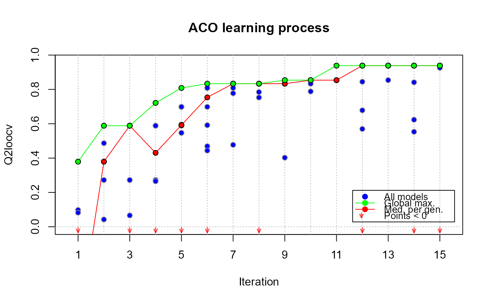
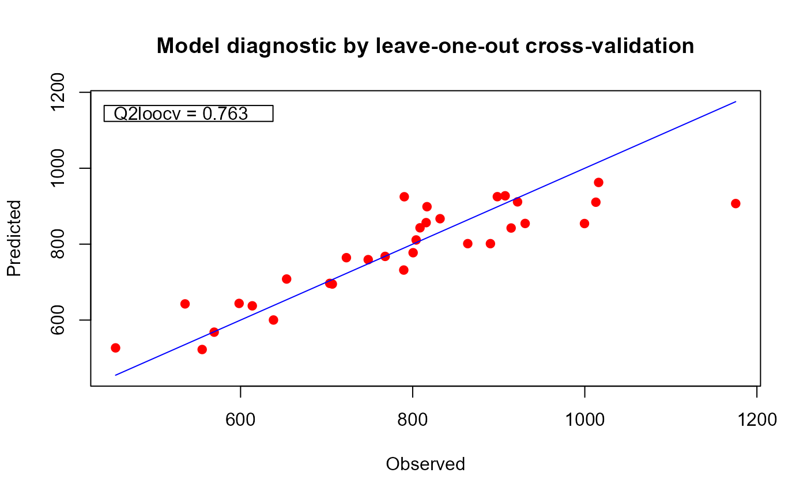

This function enables the smart exploration of the solution space of potential structural configurations of a funGp model, and the consequent selection of a high quality configuration. funGp currently relies on an ant colony based algorithm to perform this task. The algorithm defines the solution space based on the levels of each structural parameter currently available in the fgpm function, and performs a smart exploration of it. More details on the algorithm are provided in a dedicated technical report. funGp might evolve in the future to include improvements in the current algorithm or alternative solution methods.
fgpm_factory(
sIn = NULL,
fIn = NULL,
sOut = NULL,
ind.vl = NULL,
ctraints = list(),
setup = list(),
time.lim = Inf,
nugget = 1e-08,
n.starts = 1,
n.presample = 20,
par.clust = NULL,
trace = TRUE,
pbars = interactive()
)An optional matrix of scalar input values to train the model. Each column must match an input variable and each row a training point. Either scalar input coordinates (sIn), functional input coordinates (fIn), or both must be provided.
An optional list of functional input values to train the model. Each element of the list must be a matrix containing the set of curves corresponding to one functional input. Either scalar input coordinates (sIn), functional input coordinates (fIn), or both must be provided.
A vector (or 1-column matrix) containing the values of the scalar output at the specified input points.
An optional numerical matrix specifying which points in the three structures above should be used for training and which for validation. If provided, the optimization will be conducted in terms of the hold-out coefficient of determination Q², which comes from training the model with a subset of the points, and then estimating the prediction error in the remaining points. In that case, each column of ind.vl will be interpreted as one validation set, and the multiple columns will imply replicates. In the simplest case, ind.vl will be a one-column matrix or simply an array, meaning that a simple replicate should be used for each model configuration explored. If not provided, the optimization will be conducted in terms of the leave-one-out cross-validation Q², which for a total number of n observations, comes from training the model n times, each using n-1 points for training and the remaining one for validation. This procedure is typically costly due to the large number of hyperparameter optimizations that should be conducted, nonetheless, fgpm_factory implements the virtual equations introduced by Dubrule (1983) for Gaussian processes, which require a single hyperparameter optimization. See the reference below for more details.
An optional list specifying the constraints of the structural optimization problem. Valid
entries for this list are:
*s_keepOn: a numerical array indicating the scalar inputs that should remain active in the
model. It should contain the indices of the columns of sIn corresponding to the inputs to keep active.
*f_keepOn: a numerical array indicating the functional inputs that should remain active in
the model. It should contain the indices of the elements of fIn corresponding to the inputs to keep active.
*f_disTypes: a list specifying the set of distances that should be tested for some
functional inputs. The values should be taken from the possibilities offered by the fgpm
function for the argument f_disType therein. Valid choices at this time are "L2_bygroup" and
"L2_byindex". Each element of the list should receive as name the index of a functional input variable,
and should contain an array of strings with the name of the distances allowed for this input. All the
available distances will be tried for any functional input not included in the list.
*f_fixDims: a two-row matrix specifying a particular projection dimension for some
functional inputs. For each input, the value should be a number between 0 and its original dimension,
with 0 denoting no projection. The first row of the matrix should contain the index of each input, and
the second row should contain the corresponding dimensions. All the possible dimensions will be tried
for any functional input not included in the matrix (unless affected by the f_maxDims argument
below).
*f_maxDims: a two-row matrix specifying the largest projection dimension for some
functional inputs. For each input, the value should be a number between 1 and its original dimension.
The first row of the matrix should contain the index of each input, and the second row should contain
the corresponding largest dimensions. All the possible dimensions will be tried for any functional input
not included in the matrix (unless affected by the f_fixDims argument above).
*f_basTypes: a list specifying the set of basis families that should be tested for some
functional inputs. The values should be taken from the possibilities offered by the fgpm
function for the argument f_basType therein. Valid choices at this time are "B-splines" and "PCA".
Each element of the list should receive as name the index of a functional input variable, and should
contain an array of strings with the name of the distances allowed for this input. All the available
basis families will be tried for any functional input not included in the list.
*kerTypes: an array of strings specifying the kernel functions allowed to be tested. The
values should be taken from the possibilities offered by the fgpm function for the argument
kerType therein. Valid choices at this time are "gauss", "matern5_2" and "matern3_2". If not
provided, all the available kernel functions will be tried.
An optional list indicating the value for some parameters of the structural optimization
algorithm. The ant colony optimization algorithm available at this time allows the following entries:
Initial pheromone load
*tao0: a number indicating the initial pheromone load on links pointing out to the
selection of a distance type, a projection basis or a kernel type. Default is 0.1.
*dop.s: a number controlling how likely it is to activate a scalar input. It operates on a
relation of the type \(A = dop.s * I\), where A is the initial pheromone load of links
pointing out to the activation of scalar inputs and I is the initial pheromone load of links
pointing out to their inactivation. Default is 1.
*dop.f: analogous to dop.s for functional inputs. Default is 1.
*delta.f and dispr.f: two numbers used as shape parameters for the regularization
function that determines the initial pheromone values on the links connecting the L2_byindex distance
with the projection dimension. Default are 2 and 1.4, respectively.
Local pheromone update
*rho.l: a number specifying the pheromone evaporation rate. Default is 0.1.
Global pheromone update
*u.gbest: a boolean indicating if at each iteration, the pheromone load on the links
of the best ant of the whole trial should be reinforced. Default is FALSE.
*n.ibest: a number indicating how many top ants of each iteration should be used for
pheromone reinforcement. Default is 1.
*rho.g: a number specifying the learning reinforcement rate. Default is 0.1.
Population factors
*n.iter: a number specifying the amount of iterations of the algorithm. Default is 15.
*n.pop: a number specifying the amount of ants per iteration; each ant corresponds to one
structural configuration for the model. Default is 10.
Bias strength
*q0: ants use one of two rules to select their next node at each step. The first rule leads
the ant through the link with higher pheromone load; the second rule works based on probabilities which
are proportional to the pheromone load on the feasible links. The ants will randomly chose one of the two
rules at each time. They will opt for rule 1 with probability q0. Default is 0.95.
An optional number specifying a time limit in seconds to be used as stopping condition for the structural optimization.
An optional variance value standing for the homogeneous nugget effect. A tiny nugget might help to overcome numerical problems related to the ill-conditioning of the covariance matrix. Default is 1e-8.
An optional integer indicating the number of initial points to use for the optimization of the hyperparameters. A parallel processing cluster can be exploited in order to speed up the evaluation of multiple initial points. More details in the description of the argument par.clust below. Default is 1.
An optional integer indicating the number of points to be tested in order to select the
n.starts initial points. The n.presample points will be randomly sampled from the hyper-rectangle defined by:
1e-10 \(\le\) ls_s.hyp[i] \(\le\) 2*max(sMs[[i]]), for i in 1 to the number of scalar inputs,
1e-10 \(\le\) ls_f.hyp[i] \(\le\) 2*max(fMs[[i]]), for i in 1 to the number of functional inputs,
with sMs and fMs the lists of distance matrices for the scalar and functional inputs, respectively. The value of
n.starts will be assigned to n.presample if this last is smaller. Default is 20.
An optional parallel processing cluster created with the makeCluster
function of the parallel package. If not provided, structural configurations are evaluated in
sequence.
An optional boolean indicating if control messages native of the funGp package should be
printed to console. Default is TRUE. For complementary control on the display of funGp-native progress bars, have a look at
the pbars argument below.
An optional boolean indicating if progress bars should be displayed. Default is TRUE.
An object of class Xfgpm containing the data structures linked to the structural optimization
of a funGp model. It includes as the main component an object of class fgpm corresponding to the
optimized model. It is accessible through the @model slot of the Xfgpm object.
Betancourt, J., Bachoc, F., Klein, T., Idier, D., Pedreros, R., and Rohmer, J. (2020), "Gaussian process metamodeling of functional-input code for coastal flood hazard assessment". Reliability Engineering & System Safety, 198, 106870. [RESS] [HAL]
Betancourt, J., Bachoc, F., Klein, T., and Gamboa, F. (2020), Technical Report: "Ant Colony Based Model Selection for Functional-Input Gaussian Process Regression. Ref. D3.b (WP3.2)". RISCOPE project. [HAL]
Betancourt, J., Bachoc, F., and Klein, T. (2020), R Package Manual: "Gaussian Process Regression for Scalar and Functional Inputs with funGp - The in-depth tour". RISCOPE project. [HAL]
Dubrule, O. (1983), "Cross validation of kriging in a unique neighborhood". Journal of the International Association for Mathematical Geology, 15, 687-699. [MG]
* plot,Xfgpm-method with
which = "evolution" for visualizing the evolution of
the ACO algorithm, or with which = "diag" for a
diagnostic plot;
* get_active_in for post-processing of input data structures following a fgpm_factory call;
* predict,fgpm-method for predictions based on a funGp model;
* simulate,fgpm-method for simulations based on a funGp model;
* update,fgpm-method for post-creation updates on a funGp model.
#construction of a fgpm object
set.seed(100)
n.tr <- 32
x1 <- x2 <- x3 <- x4 <- x5 <- seq(0,1,length = n.tr^(1/5))
sIn <- expand.grid(x1 = x1, x2 = x2, x3 = x3, x4 = x4, x5 = x5)
fIn <- list(f1 = matrix(runif(n.tr * 10), ncol = 10),
f2 = matrix(runif(n.tr * 22), ncol = 22))
sOut <- fgp_BB7(sIn, fIn, n.tr)
# optimizing the model structure with fgpm_factory (~12 seconds)
if (FALSE) {
xm <- fgpm_factory(sIn = sIn, fIn = fIn, sOut = sOut)
}
# assessing the quality of the model
# in the absolute and also w.r.t. the other explored models
plot(xm, which = "diag")
# checking the evolution of the algorithm
plot(xm, which = "evol")

# Summary of the tested configurations
summary(xm)
#> Inputs and details
#> X1 X2 X3 X4 X5 F1 D_F1 Dim_F1 Bas_F1 F2 D_F2 Dim_F2 Bas_F2 Kern Q2
#> 1 x x x x x idx 1 Bspl x idx 3 Bspl gauss 0.939
#> 2 x x x x x idx 1 PCA x idx 3 Bspl gauss 0.854
#> 3 x x x x idx 1 Bspl x idx 3 Bspl gauss 0.854
#> 4 x x x x grp 1 Bspl x idx 3 Bspl gauss 0.854
#> 5 x x x x x idx 1 Bspl x idx 3 Bspl mat32 0.845
#> 6 x x x x -- - -- x idx 3 Bspl gauss 0.841
#> 7 x x x x idx 1 Bspl x idx 3 Bspl mat32 0.833
#> 8 x x x x idx 1 Bspl x idx 3 Bspl mat52 0.809
#> 9 x x x x idx 1 Bspl x grp 22 PCA gauss 0.788
#> 10 x x x x idx 1 PCA x idx 3 Bspl mat32 0.785
#> 11 x x x -- - -- x idx 3 Bspl mat32 0.753
#> 12 x x x x idx 1 Bspl x idx 3 PCA gauss 0.721
#> 13 x x x x x idx 1 Bspl x idx 1 Bspl gauss 0.678
#> 14 x x x -- - -- x idx 3 Bspl gauss 0.623
#> 15 x x x x idx 1 PCA x idx 3 PCA gauss 0.596
#> 16 x x -- - -- x idx 3 PCA gauss 0.589
#> 17 x x x idx 1 Bspl x idx 3 Bspl mat32 0.570
#> 18 x x x x x idx 1 Bspl x idx 3 PCA gauss 0.553
#> 19 x x x x grp 5 Bspl x idx 3 PCA mat32 0.487
#> 20 x x -- - -- x idx 3 Bspl mat32 0.477
#> 21 x x -- - -- x idx 3 Bspl mat52 0.469
#> 22 x x x x grp 2 PCA x idx 3 Bspl mat32 0.402
#> 23 x x -- - -- x idx 3 PCA mat32 0.379
#> 24 x x x x -- - -- x idx 3 Bspl mat32 0.098
# checking the log of crashed iterations
print(xm@log.crashes)
#> An object of class "antsLog"
#> Slot "sols":
#> data frame with 0 columns and 0 rows
#>
#> Slot "args":
#> list()
#>
#> Slot "fitness":
#> numeric(0)
#>
# building the model with the default fgpm arguments to compare
set.seed(100)
n.tr <- 32
x1 <- x2 <- x3 <- x4 <- x5 <- seq(0,1,length = n.tr^(1/5))
sIn <- expand.grid(x1 = x1, x2 = x2, x3 = x3, x4 = x4, x5 = x5)
fIn <- list(f1 = matrix(runif(n.tr * 10), ncol = 10),
f2 <- matrix(runif(n.tr * 22), ncol = 22))
sOut <- fgp_BB7(sIn, fIn, n.tr)
m1 <- fgpm(sIn = sIn, fIn = fIn, sOut = sOut)
#> ** Presampling...
#> ** Optimising hyperparameters...
#> final value 205.640552
#> converged
#> The function value is the negated log-likelihood
#> ** Hyperparameters done!
plot(m1) # plotting the model

# improving performance with more iterations_______________________________________________
# call to fgpm_factory (~22 seconds)
if (FALSE) {
xm25 <- fgpm_factory(sIn = sIn, fIn = fIn, sOut = sOut,
setup = list(n.iter = 25))
}
# assessing evolution and quality
plot(xm25, which = "evol")
plot(xm25, which = "diag")
# custom solution space____________________________________________________________________
myctr <- list(s_keepOn = c(1,2), # keep both scalar inputs always on
f_keepOn = c(2), # keep f2 always active
f_disTypes = list("2" = c("L2_byindex")), # only use L2_byindex distance for f2
f_fixDims = matrix(c(2,4), ncol = 1), # f2 projected in dimension 4
f_maxDims = matrix(c(1,5), ncol = 1), # f1 projected in dimension max 5
f_basTypes = list("1" = c("B-splines")), # only use B-splines projection for f1
kerTypes = c("matern5_2", "gauss")) # test only Matern 5/2 and Gaussian kernels
#
# call to fgpm_factory (~12 seconds)
if (FALSE) {
xmc <- fgpm_factory(sIn = sIn, fIn = fIn, sOut = sOut, ctraints = myctr)
}
# assessing evolution and quality
plot(xmc, which = "evol")
plot(xmc, which = "diag")
# verifying constraints with the log of some successfully built models
summary(xmc)
#> Inputs and details
#> X1 X2 X3 X4 X5 F1 D_F1 Dim_F1 Bas_F1 F2 D_F2 Dim_F2 Bas_F2 Kern Q2
#> 1 x x x -- - -- x idx 4 Bspl mat52 0.767
#> 2 x x x x idx 3 Bspl x idx 4 Bspl mat52 0.736
#> 3 x x x x -- - -- x idx 4 Bspl mat52 0.645
#> 4 x x x x x idx 3 Bspl x idx 4 Bspl mat52 0.471
#> 5 x x x x -- - -- x idx 4 Bspl mat52 0.430
#> 6 x x x -- - -- x idx 4 Bspl gauss 0.430
#> 7 x x -- - -- x idx 4 Bspl mat52 0.418
#> 8 x x x x x x idx 1 Bspl x idx 4 Bspl mat52 0.380
#> 9 x x x x x -- - -- x idx 4 Bspl mat52 0.268
#> 10 x x x x x -- - -- x idx 4 PCA gauss 0.260
#> 11 x x x x x -- - -- x idx 4 PCA mat52 0.121
#> 12 x x x x -- - -- x idx 4 Bspl mat52 0.101
#> 13 x x x x idx 1 Bspl x idx 4 Bspl gauss 0.021
#> 14 x x x x idx 2 Bspl x idx 4 Bspl mat52 -0.055
#> 15 x x x -- - -- x idx 4 PCA mat52 -0.075
#> 16 x x x -- - -- x idx 4 PCA gauss -0.105
#> 17 x x x x idx 3 Bspl x idx 4 Bspl mat52 -0.158
#> 18 x x x x x grp 3 Bspl x idx 4 PCA gauss -0.275
# custom heuristic parameters______________________________________________________________
mysup <- list(n.iter = 30, n.pop = 12, tao0 = .15, dop.s = 1.2,
dop.f = 1.3, delta.f = 4, dispr.f = 1.1, q0 = .85,
rho.l = .2, u.gbest = TRUE, n.ibest = 2, rho.g = .08)
# call to fgpm_factory (~20 seconds)
if (FALSE) {
xmh <- fgpm_factory(sIn = sIn, fIn = fIn, sOut = sOut, setup = mysup)
}
# verifying heuristic setup through the details of the Xfgpm object
unlist(xmh@details$param)
#> n.iter n.pop tao0 dop.s dop.f delta.f1 delta.f2 dispr.f1
#> 30.00 12.00 0.15 1.20 1.30 4.00 4.00 1.10
#> dispr.f2 q0 rho.l u.gbest n.ibest rho.g
#> 1.10 0.85 0.20 1.00 2.00 0.08
# stopping condition based on time_________________________________________________________
mysup <- list(n.iter = 2000)
mytlim <- 60
# call to fgpm_factory (~60 seconds)
if (FALSE) {
xms <- fgpm_factory(sIn = sIn, fIn = fIn, sOut = sOut,
setup = mysup, time.lim = mytlim)
}
summary(xms)
#> Inputs and details
#> X1 X2 X3 X4 X5 F1 D_F1 Dim_F1 Bas_F1 F2 D_F2 Dim_F2 Bas_F2 Kern Q2
#> 1 x x x idx 2 Bspl x idx 2 Bspl gauss 0.979
#> 2 x x x grp 2 Bspl x idx 2 Bspl gauss 0.978
#> 3 x x x idx 2 Bspl x idx 2 Bspl mat52 0.977
#> 4 x x x x idx 2 Bspl x idx 2 Bspl gauss 0.976
#> 5 x x x x idx 2 Bspl x idx 2 Bspl gauss 0.973
#> 6 x x x x idx 2 Bspl x idx 2 Bspl gauss 0.972
#> 7 x x x idx 2 Bspl x idx 2 Bspl gauss 0.972
#> 8 x x x idx 3 Bspl x idx 2 Bspl gauss 0.968
#> 9 x x x x idx 2 Bspl x idx 2 Bspl gauss 0.964
#> 10 x x x idx 2 Bspl x idx 3 Bspl gauss 0.964
#> 11 x x x x idx 2 Bspl x idx 3 Bspl gauss 0.963
#> 12 x x idx 2 Bspl x idx 2 Bspl gauss 0.963
#> 13 x x x x idx 2 Bspl x grp 6 Bspl gauss 0.961
#> 14 x x x grp 3 Bspl x idx 2 Bspl gauss 0.959
#> 15 x x x x grp 2 Bspl x idx 2 Bspl gauss 0.959
#> 16 x x x idx 2 Bspl x idx 2 Bspl mat32 0.958
#> 17 x x x x idx 2 Bspl x idx 2 Bspl mat52 0.956
#> 18 x x x x idx 2 Bspl x idx 3 Bspl gauss 0.953
#> 19 x x x idx 2 Bspl x idx 2 Bspl mat32 0.953
#> 20 x x x x grp 3 Bspl x idx 2 Bspl gauss 0.948
#> 21 x x x x x idx 2 Bspl x idx 2 Bspl gauss 0.946
#> 22 x x x idx 2 Bspl x idx 3 Bspl mat52 0.944
#> 23 x x x x idx 2 Bspl x idx 3 Bspl mat52 0.943
#> 24 x x x x idx 2 Bspl x grp 7 Bspl gauss 0.942
if (FALSE) {
# parallelization in the model factory_____________________________________________________
# generating input and output data
set.seed(100)
n.tr <- 243
sIn <- expand.grid(x1 = seq(0,1,length = n.tr^(1/5)), x2 = seq(0,1,length = n.tr^(1/5)),
x3 = seq(0,1,length = n.tr^(1/5)), x4 = seq(0,1,length = n.tr^(1/5)),
x5 = seq(0,1,length = n.tr^(1/5)))
fIn <- list(f1 = matrix(runif(n.tr*10), ncol = 10), f2 = matrix(runif(n.tr*22), ncol = 22))
sOut <- fgp_BB7(sIn, fIn, n.tr)
# calling fgpm_factory in parallel
cl <- parallel::makeCluster(2)
xm.par <- fgpm_factory(sIn = sIn, fIn = fIn, sOut = sOut, par.clust = cl) # (~260 seconds)
parallel::stopCluster(cl)
# NOTE: in order to provide progress bars for the monitoring of time consuming processes
# ran in parallel, funGp relies on the doFuture and future packages. Parallel processes
# suddenly interrupted by the user tend to leave corrupt connections. This problem is
# originated outside funGp, which limits our control over it. In the manual
# of funGp, we provide a temporary solution to the issue and we remain attentive in
# case it appears a more elegant way to handle it or a manner to suppress it.
#
# funGp manual: https://hal.archives-ouvertes.fr/hal-02536624
}